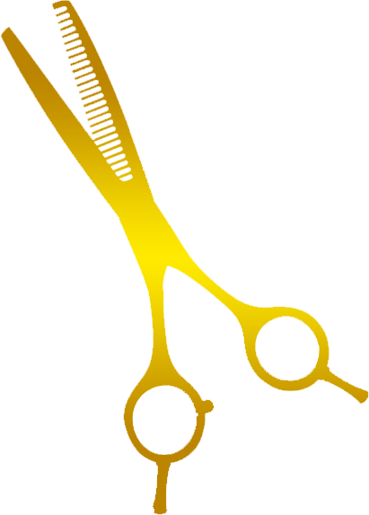

LAMINAS AFIADAS, TESOURAS PRECISAS, PARA UM TRABALHO DIGNO DE UM MESTRE

SOBRE NÓS
especializada em laminas e tesouras de tosa oferecemos serviçoes e produtos de alta qualidade para profissionais de grooming e petshops. Um novo conceito em afiações, buscamos fornecer aos nossos clientes soluções para a tosa profissional, garantindo o bem-estar e conforto dos animais

LAMINAS DE TOSA MAIS USADAS PARA RESULTADOS INPECAVEIS


LAMINAS ANDIS
reconhecidas pela precisão de corte e durabilidade, ideais para cortes suaves em uma variedade de pelos
LAMINAS OSTER
valorizados por sua qualidade e desempenho confiavel, oferecendo cortes precisos em pelos densos e grossos
LAMINAS WAHL
reconhecida pela sua versatilidade e flexibilidade, adaptando-se a diferente estilos de tosas e texturas de pelos
LAMINAS PRECISION
valorizadas pela sua precisão e acabamento de alta qualidade, proporcionando cortes suaves e uniformes em diversos estilos de tosa
TESOURAS AFIADAS PARA UM ACABEMTO IMPECAVEL

TESOURA RETA
ideais para cortes uniformes e precisos em areas planas do corpo do animal

TESOURA CURVA
projetada para cortes suaves e precisos em areas arredondadas ou curvas, como orelhas e patas

TESOURA SEMIDENTADA
projetada para desbastar e dar textura ao pelo, sendo ideal para dar um acabamento natural e suave

TESOURA TUBARÃO
possuem laminas serrilhadas que ajudam a agarrar e cortar pelos mais grossos, proporcionando um corte mais eficaz em áreas mais densas